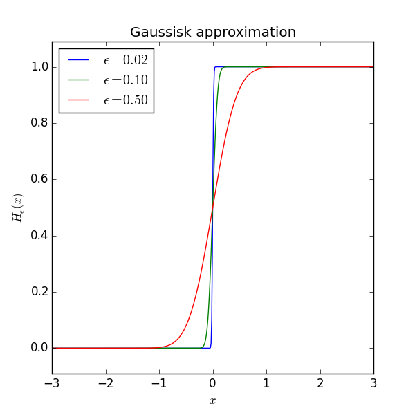
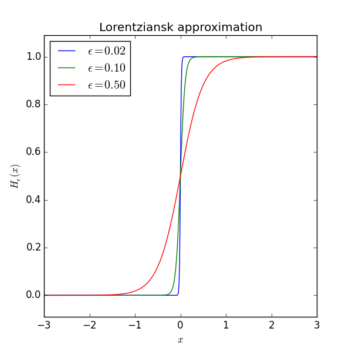

Konstruera approximationerna till stegfunktionen svarande mot approximationerna av deltafunktionen i ekv. (7.6), (7.7) och (7.8)!
Hint.
Answer. I samtliga fall har man \( \sigma_\epsilon (x)=\int_{-\infty}^x h_\epsilon (y)dy \), där \( h_\epsilon(x) \) är approximationen av \( \delta(x) \). Svarande mot (7.6) har man en styckvis linjär och kontinuerlig funktion som är 0 för \( x < -\frac{\epsilon}{2} \), 1 för \( x>\frac{\epsilon}{2} \) och växer linjärt däremellan. Svarande mot (7.7) har man \( \sigma_\epsilon(x)=\frac{1}{2}\left(1+\mathrm{erf}(\frac{x}{\epsilon})\right) \) och mot (7.8) har man \( \sigma_\epsilon(x)=\frac{1}{2}+\frac{1}{\pi}\tanh(\frac{x}{\epsilon}) \).
Solution. Stegfunktionen kan definieras som (ekvation (7.10) i Cederwall) $$ \begin{equation} H(x) =\int_{-\infty}^x\mathrm dt\ \delta(t)=\left\{\begin{array}{cc} 0 & x < 0 \\ 1 & x > 0 \end{array} \right.. \tag{1} \end{equation} $$ Exakt vilket värde \( H(0) \) antar varierar i litteraturen. Vanligt är att \( H(0) \) är odefinierat eller lika med \( 1/2 \).
Varje given deltafunktions-approximation kan alltså integreras enligt ekvation (1) och ger då en motsvarande stegfunktions-approximation. Till exempel kan $$ \begin{equation} \delta(x)=\lim_{\epsilon\rightarrow 0}h_\epsilon(x) =\lim_{\epsilon\rightarrow 0}\left\{\begin{array}{cc} 1/\epsilon & |x| < \epsilon/2 \\ 0 & |x| > \epsilon/2 \end{array} \right. \end{equation} $$ integreras trivialt till (med eget val av integrationskonstant) $$ \begin{equation} H(x)=\lim_{\epsilon\rightarrow 0}\left\{\begin{array}{cc} 0 & x < -\epsilon/2 \\ \frac{x}{\epsilon}+\frac{1}{2} & -\epsilon/2 < x < \epsilon/2 \\ 1 & x > \epsilon/2 \end{array} \right.. \end{equation} $$
För den Gaussiska deltafunktions-approximationen \( h_\epsilon(x) =\exp\left[-x^2/\epsilon^2\right]/\epsilon\sqrt\pi \) får vi stegfunktionen (med eget val av integrationskonstant) $$ \begin{equation} H(x)=\lim_{\epsilon\rightarrow 0}\frac{1}{2}\left[1+\mathrm{erf}\left(\frac{ x}{\epsilon}\right)\right]. \end{equation} $$ Här är felfunktionen $$ \begin{equation} \mathrm{erf}(x)=\frac2{\sqrt\pi}\int_0^x\mathrm dt\ e^{-t^2}. \end{equation} $$
Slutligen har vi den Lorentzianska approximationen \( h_\epsilon(x)=\epsilon\pi^{-1}(x^2+\epsilon^2)^{-1} \), som även den är rättfram att integrera. Resultatet är (med eget val av integrationskonstant) $$ \begin{equation} H(x)=\lim_{\epsilon\rightarrow 0}\left[\tfrac12+\tfrac12\tanh\left(\tfrac x\epsilon\right)\right]. \end{equation} $$
Utseendet på dessa funktioner skissas i figurerna 1 och 2 för några olika värden på \( \epsilon \).
Figure 1: Primitiva funktionen till den Gaussiska approximationen av deltafunktionen i gränsen \( \epsilon \to 0 \).

Figure 2: Primitiva funktionen till den Lorentziska approximationen av deltafunktionen i gränsen \( \epsilon \to 0 \).

Uppgiften illustrerar hur en stegfunktion resulterar som en primitiv funktion till en deltafunktion. Vi undersöker olika distributioner för vilka integralen kan utföras analytiskt och studerar sedan gränsen då \( \epsilon \to 0 \).